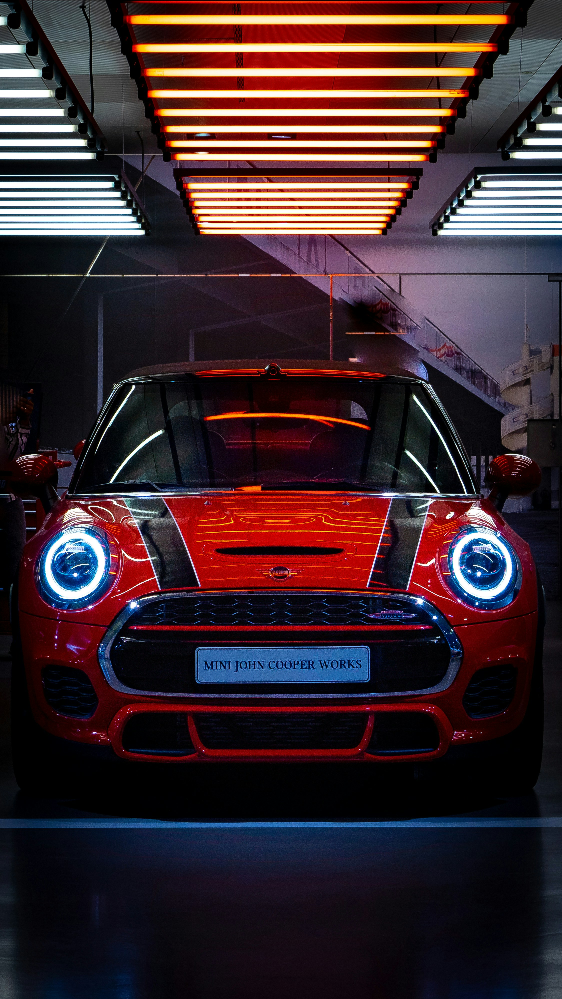

- red mini
- other mini
red mini
COOPER always
loved many peoplr for many decades.
Mini (stylised as MINI)[1] is a British automotive brand founded in Oxford in 1969, owned by German multinational automotive company BMW since 2000, and used by them for a range of small cars assembled in the United Kingdom, Austria, Netherlands (until 16 February 2024) and Germany. The word Mini has been used in car model names since 1959, and in 1969 it became a brand in its own right when the name "Mini" replaced the separate "Austin Mini" and "Morris Mini" car model names.[2][3] BMW acquired the brand in 1994 when it bought Rover Group (formerly British Leyland), which owned Mini, among other brands.[
